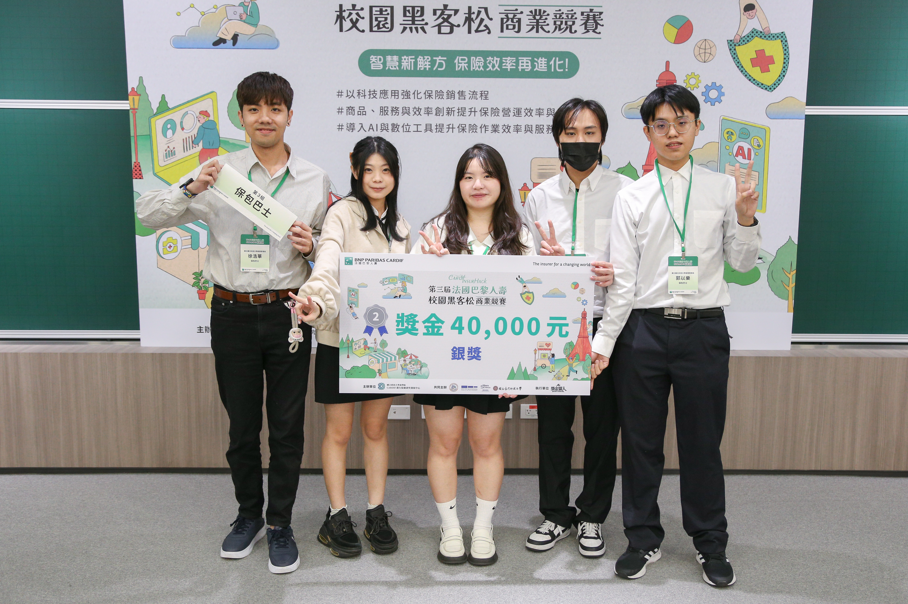
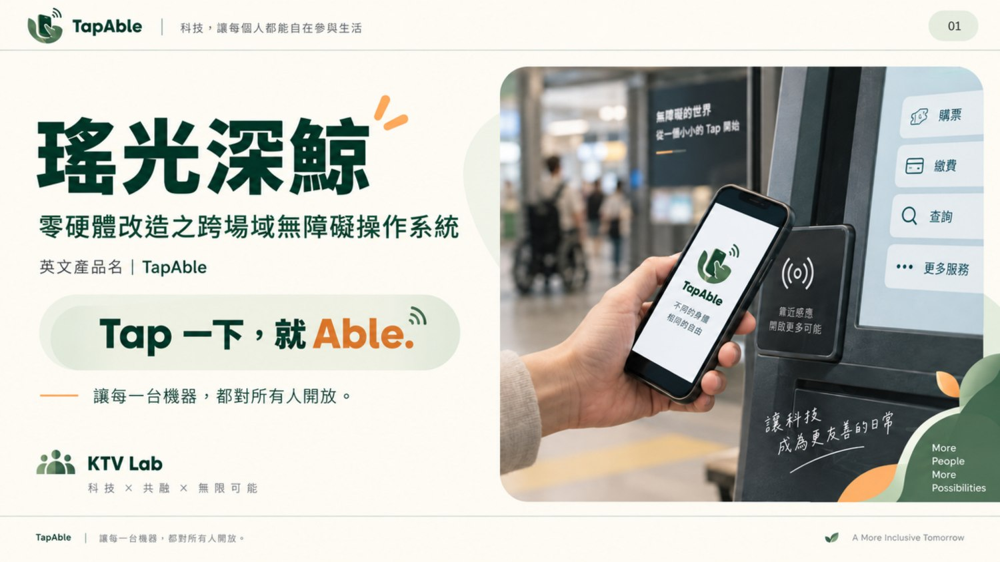

NASA
1ST
1ST
NASA Space Apps Challenge 2026
〈Echoes Beyond Earth: Still Answering〉以互動網站保存留在月球與火星上的機器故事，結合 NASA 開放資料、3D 體驗與可查證的證據頁。
開啟作品網站在地評選結果，非全球獎項
IDEAS WE TURNED INTO PROJECTS
我喜歡競賽裡的限時與未知。和夥伴一起，把使用者需求、資料洞察與 AI 原型，變成能被看見、被測試，也能繼續追問的作品。
LATEST RESULTS
名次不是故事的全部，但它記錄了作品被看見、被追問，也被推得更遠的時刻。
〈Echoes Beyond Earth: Still Answering〉以互動網站保存留在月球與火星上的機器故事，結合 NASA 開放資料、3D 體驗與可查證的證據頁。
TapAble 從無障礙原型走向創業提案，完成使用者驗證、AI 流程建檔與 B2B2C 場域付費模型，於 11 月 20 日 Meet Taipei 決賽獲第三名。
Jalan Bareng 提出〈yoxi 陪出門〉，用 AI 跨語言理解、家庭授權代付與接送回報，回應外籍看護陪同長者就醫的交通協作問題。
TapAble〈警示會找到你的眼睛〉從無障礙情境出發，思考座艙資訊如何主動抵達真正需要它的人。
以 TapAble 延伸 AI 與無障礙服務構想，讓公共機台與數位服務更容易被自主使用。
「職影未來」提出〈沒有年資也有證明——臺北影子工單計畫〉，讓青年早期工作經驗有機會被記錄與理解。
TAPABLE · STARTUP JOURNEY
TapAble 不只是同一份簡報反覆參賽，而是在每一次驗證與回饋中，逐步補上技術、使用者與商業模式。
從「看不到螢幕、找不到按鈕、容易誤觸」開始，我們把手機 NFC、AI 語音指引與機台操作流程接在一起。目標不是代替使用者，而是讓使用者保有自主完成的選擇。
看最新創業版決賽簡報辨識視障者在餐飲點餐、醫院報到與交通售票等自助機台遇到的共同阻礙。
建立「掃描 QR Code、手機感應、語音引導、回傳結果」的五步驟服務。
把 AI 產生的流程草稿交由人工校對，再用 iOS、Android 與視障參與者測試。
以連鎖餐飲與場域營運者為客戶，規劃一次性建置與每台每月維護的 B2B2C 模式。
WORK IN PROGRESS
只保留尚未揭曉結果的項目，讓目前狀態一眼就能讀懂。
RobinSave：在 ASUS UGen300 上運行的裝置端語音 AI 詐騙電話模擬器。
團隊「知更守護」以 InsureDrama／保你有戲探索互動式保險溝通。
CLOSED CHAPTERS
把結果說清楚，也保留真正帶得走的方法與經驗。
團隊「禍不單行，陪你通行」完成政策提案與決賽實作；這次沒有獲獎，但留下了把利害關係人需求轉成政策方案的經驗。
KTV LAB 用 Pecha Kucha 釐清設計問題、原型與價值主張。結果沒有進入下一階段，方法與迭代紀錄仍留在作品脈絡裡。
SELECTED ARCHIVE
點進作品頁，看題目、我的角色、使用的工具，以及可公開的簡報與成果。


AI 與實作 · 2026.07
PressPlay AI⁺
以遊戲化、主動診斷與 AI 陪伴回應學習中斷。


